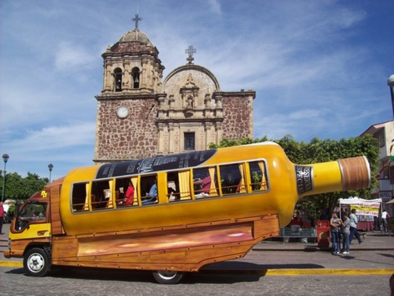
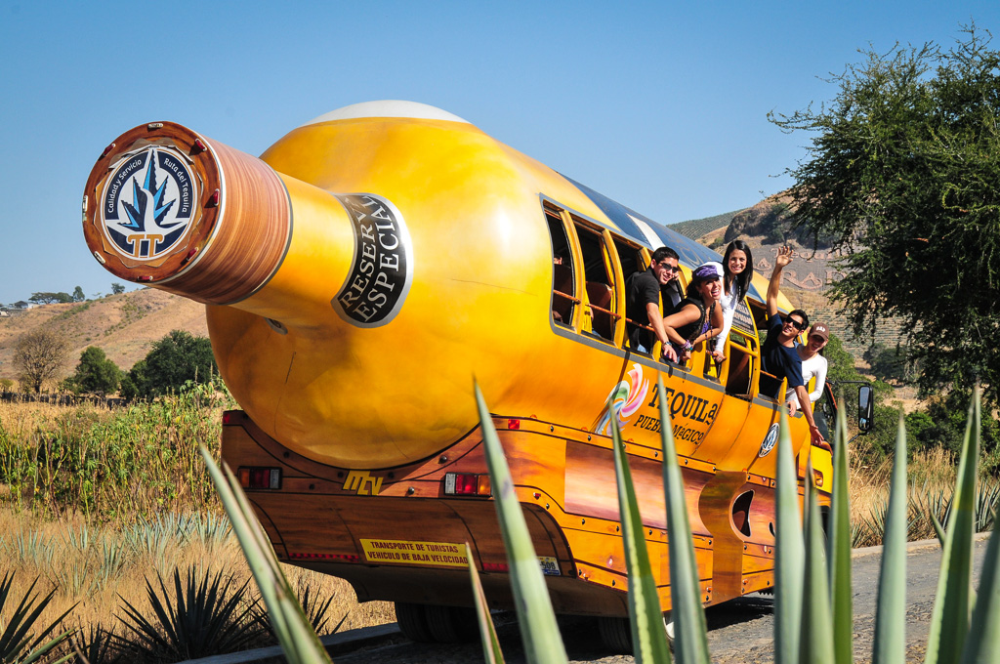
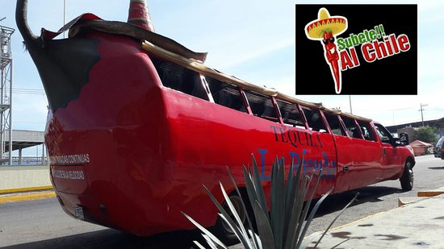
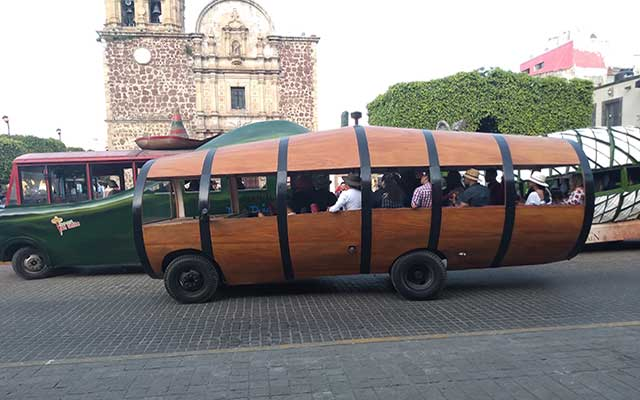
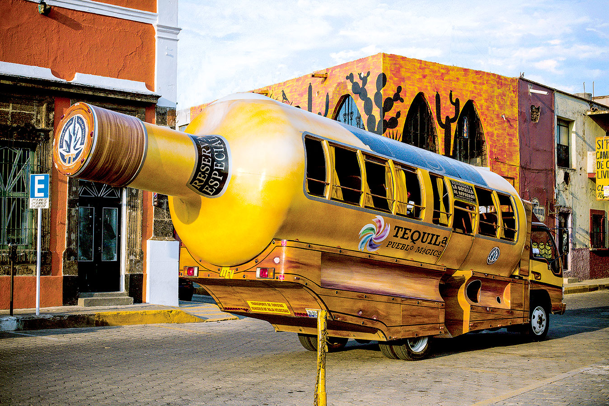
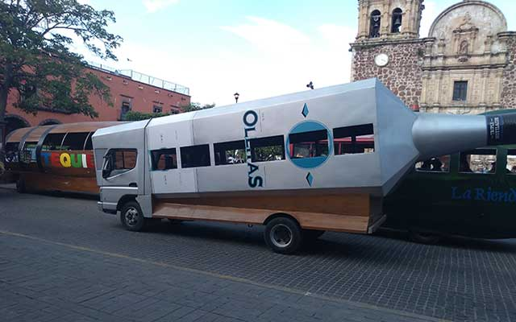

Los Recorridos Turísticos en Tequila se han vuelto una costumbre o moda, por decirlo asi, es por eso que en esta sección te daré la explicación de los recorridos turísticos que hay en tequila para que puedas comparar precios y servicios que ofrecen cada uno de ellos.

Los Recorridos consisten en dar un tour por Tequila a bordo de un
camionsito ya sea de una figura especifica o barril.
Los recorridos empiezan dando un tour por el pueblo abordo del camionsito, lo primero que hacen es pasear por el pueblo mientras el guía cuenta historias de Tequila, la segunda ruta es ir al paisaje agavero, el cual los llevan a los campos de agave a que se tomen fotos, la tercera ruta es llegar a la fábrica a ver el procedimiento del tequila y por ultimo los regresan al centro para que continuen con su estancia en Tequila. El recorrido dura aproximadamente 2 horas.

"Cabe recalcar que todas las empresas ofrecen el mismo servicio de
recorrido pero a continuación te muestro que empresa tiene camiones y
cual es su forma"
Los Precios rondan desde $150 hasta $450 dependiendo
"LA RIENDA" Camión con forma de chile, el más famoso de tequila
"LA AGUIRREÑA" Camión con forma de barril
"CORAZÓN DE AGAVE" Camión con forma de Botella y más diseños
"ORENDAIN" Camión con forma de Botella
